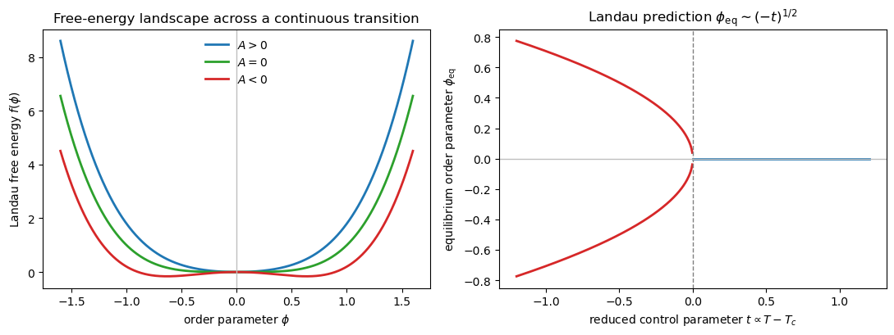
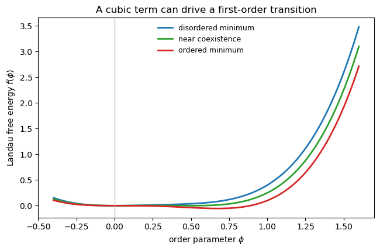

Landau Theory#
This section covers the Landau description of continuous and first-order phase transitions, the role of symmetry and order parameters, the Ising example, mean-field critical exponents, universality, and the liquid-gas critical point.
1. Phase transitions and non-analytic thermodynamics#
A phase transition occurs when a thermodynamic potential, such as the Helmholtz free energy
develops non-analytic behavior as a function of a control parameter such as temperature.
Two important cases are:
First-order transitions#
At a first-order transition, the free energy itself is continuous, but its first derivative is discontinuous. Since
this means that entropy, volume, or other first derivatives can jump across the transition.
Typical signatures:
metastability,
hysteresis,
latent heat.
Continuous (second-order) transitions#
At a continuous transition, the free energy and its first derivatives remain continuous, but higher derivatives become singular or discontinuous. For example,
may jump or diverge.
So continuous transitions show up as kinks or singularities in observables derived from higher derivatives of the free energy.
2. Latent heat#
For a first-order transition between phases 1 and 2, the free energies are equal at the transition temperature (T_c):
Using
we get
so
The quantity
is the latent heat: the system absorbs or releases a finite amount of heat at fixed temperature during the phase change.
Examples:
melting of ice: large but finite latent heat,
liquid-gas transition in water: even larger latent heat.
This is why first-order transitions can be very useful in practice: they allow a system to absorb or release a lot of energy while staying near the transition temperature.
3. Continuous transitions and symmetry: which ones are allowed?#
Continuous phase transitions are not arbitrary. Empirically and theoretically, they are found only between certain pairs of phases.
A useful way to think about this is in terms of symmetry groups. Suppose two phases are described by space groups (SG_1) and (SG_2). A direct continuous transition is often possible when one symmetry group is a subgroup of the other:
Then one phase can be obtained from the other by a continuous symmetry-breaking distortion.
But this subgroup criterion is only a useful guide, not a complete theorem. Even when the symmetry relation allows a continuous transition, the Landau expansion may still contain symmetry-allowed terms that drive the transition first order, such as cubic invariants.
So the practical Landau logic is:
symmetry tells us which order parameter is plausible,
the Landau polynomial tells us whether a continuous transition is generic or whether first-order behavior is expected instead.
This is one of the first hints that symmetry strongly constrains critical behavior.
4. Order parameters and symmetry breaking#
An order parameter is an observable that transforms nontrivially under a symmetry that is broken in the ordered phase.
If (g\in G) is a symmetry operation and (\phi) is an observable such that
then (\phi) can serve as an order parameter for that symmetry.
The key distinction is:
If
the symmetry is spontaneously broken.
At zero external field and in the thermodynamic limit, the states (\langle \phi \rangle=0) and (\langle \phi \rangle\neq 0) have different symmetry, so changing between them requires a phase transition. In a finite system, or in the presence of an explicit symmetry-breaking field, this sharp distinction is rounded into a crossover.
Example: structural distortion#
In a crystal, atoms may shift from high-symmetry positions below (T_c). The displacement vector
then serves as the order parameter. If a rotation or reflection changes (\vec\phi), the nonzero expectation value of (\vec\phi) signals spontaneous breaking of that symmetry.
More formally, order parameters transform in irreducible representations of the symmetry group.
5. Effective free energy#
Suppose we have identified an order parameter (\phi). In principle, we would like to compute its distribution microscopically, but that is usually hard.
Landau’s key idea is to define an effective free energy (or effective Hamiltonian) for the order parameter.
Starting from the microscopic Hamiltonian (H[\psi]), one can formally define (H_{\mathrm{eff}}(\Phi)) through
Then the partition function becomes
and expectation values can be written as
In the thermodynamic limit (V\to\infty), the integral is dominated by the minimum of (H_{\mathrm{eff}}), so the equilibrium order parameter is obtained by minimizing the effective free energy.
6. Landau expansion near a continuous transition#
Near a continuous transition, the order parameter is small, so we expand the effective free energy in powers of (\phi):
where the coefficients depend smoothly on thermodynamic control parameters such as (T), (P), (N), etc.
This is the basic Landau strategy:
identify the order parameter,
write the most general low-order expansion allowed by symmetry,
minimize it.
Symmetry constraints#
Because the microscopic theory is invariant under the symmetry group (G), the effective free energy must obey
This strongly constrains which terms are allowed.
For example, if the symmetry sends
then all odd powers are forbidden and the expansion becomes
For a standard continuous transition we also need the polynomial to be stable for large (|\phi|), so the highest retained even-order coefficient must be positive. In the simplest truncation this means (B>0).
If symmetry allows a cubic term, or if the quartic coefficient becomes negative and a stabilizing (\phi^6) term is needed, then the transition is generically first order rather than continuous.
Aside: how Landau theory produces first-order transitions#
The simplest continuous transition came from the even polynomial
There are two common ways for Landau theory to predict a first-order transition instead.
First, symmetry may allow a cubic invariant,
which can make the global minimum jump discontinuously as parameters change.
Second, the quartic coefficient may change sign, so one must keep a stabilizing sixth-order term,
which again produces a discontinuous jump of the order parameter.
So in Landau theory, the order of the transition is encoded directly in the lowest symmetry-allowed terms of the polynomial.
7. Ising example#
For the Ising model, the symmetry is
and the order parameter is the magnetization
Because the symmetry sends (\phi\to -\phi), cubic and other odd terms are forbidden. So the Landau free energy is
with (B>0) for stability.
To find equilibrium, minimize with respect to (\phi):
Thus for (A>0), the only minimum is
corresponding to the disordered phase.
For (A<0), there are two minima,
corresponding to the symmetry-broken ordered phase.
So the critical point occurs when
Geometrically, the transition occurs when the curvature at the origin changes sign. For (A>0) there is a single minimum at (\phi=0); for (A<0) the origin becomes unstable and two symmetry-related minima appear.
Show code cell source
import numpy as np
import matplotlib.pyplot as plt
phi = np.linspace(-1.6, 1.6, 600)
B = 1.0
A_values = [0.8, 0.0, -0.8]
labels = [r'$A>0$', r'$A=0$', r'$A<0$']
colors = ['C0', 'C2', 'C3']
fig, axes = plt.subplots(1, 2, figsize=(11, 4.2))
for A, label, color in zip(A_values, labels, colors):
f = A * phi**2 + B * phi**4
axes[0].plot(phi, f, label=label, color=color, lw=2)
axes[0].axvline(0, color='0.75', lw=1)
axes[0].set_xlabel(r'order parameter $\phi$')
axes[0].set_ylabel(r'Landau free energy $f(\phi)$')
axes[0].set_title('Free-energy landscape across a continuous transition')
axes[0].legend(frameon=False)
t = np.linspace(-1.2, 1.2, 400)
phi_eq = np.zeros_like(t)
mask = t < 0
phi_eq[mask] = np.sqrt(-t[mask] / (2 * B))
axes[1].plot(t[mask], phi_eq[mask], color='C3', lw=2)
axes[1].plot(t[mask], -phi_eq[mask], color='C3', lw=2)
axes[1].plot(t[~mask], phi_eq[~mask], color='C0', lw=2)
axes[1].axvline(0, color='0.5', ls='--', lw=1)
axes[1].axhline(0, color='0.75', lw=1)
axes[1].set_xlabel(r'reduced control parameter $t \propto T-T_c$')
axes[1].set_ylabel(r'equilibrium order parameter $\phi_{\rm eq}$')
axes[1].set_title(r'Landau prediction $\phi_{\rm eq} \sim (-t)^{1/2}$')
plt.tight_layout()
plt.show()

The left panel shows the bifurcation from one minimum to two symmetry-related minima. The right panel shows the corresponding square-root onset of the order parameter below (T_c).
8. Temperature dependence and the order-parameter exponent#
Near the critical temperature, expand
To leading order,
Below (T_c), where (A<0), the order parameter is
Therefore Landau theory predicts the mean-field exponent
This is the classic square-root onset of the order parameter below the transition.
9. Free energy, entropy, and heat capacity#
Substituting the minimizing value of (\phi) back into the free energy gives
For (T>T_c), the minimum is at (\phi=0), so
For (T<T_c), using (\phi^2=|A|/(2B)), one finds
Since (A\propto T-T_c), the correction is quadratic in (T-T_c). Thus (F) and (S=-\partial F/\partial T) remain continuous, but the heat capacity
has a jump at (T_c).
More explicitly, if (A=a_0(T-T_c)), then below the transition
so
Therefore the heat-capacity jump is finite:
So within Landau mean-field theory:
(F) is continuous,
(S) is continuous,
(C) jumps.
10. External field, rounding, susceptibility, and the isotherm exponent#
If an external field (h) couples linearly to the order parameter, then
The stationarity condition becomes
Writing (t=T-T_c) and (A=a_0 t), this becomes
Rounding of the transition#
For any nonzero field (h), the order parameter is never exactly zero. Thus the sharp transition is rounded out.
Balancing the linear and cubic terms gives the scale of the rounded region:
Susceptibility#
The susceptibility is
For (t>0), the cubic term is negligible and
For (t<0), write (\phi=\phi_0+\delta\phi) with
Linearizing the equation of state about (\phi_0) gives
so
Therefore the susceptibility has the same exponent on both sides of the transition,
The exponent is the same above and below (T_c), although the amplitudes differ by a factor of two.
Hence Landau theory predicts
Critical isotherm#
At (t=0), the linear term vanishes and
so
Therefore the isotherm exponent is
11. Summary of mean-field critical exponents#
Using the reduced temperature (t=T-T_c), Landau mean-field theory gives:
Heat capacity exponent#
(The heat capacity jumps rather than diverges.)
Order parameter exponent#
Susceptibility exponent#
Critical isotherm exponent#
12. Experiment and universality#
Landau theory correctly predicts that many observables obey power laws near criticality. For example, the order parameter in a uniaxial ferromagnet follows a clean power law close to the transition.
However, the actual exponents in three-dimensional systems are not generally the mean-field values. For the 3D Ising universality class, experiments and more refined theory give approximately
This mismatch is not a failure of the symmetry logic of Landau theory. Instead, it tells us that fluctuations matter near criticality, and mean-field theory neglects them.
For short-range systems with a scalar order parameter, mean-field exponents become exact only above the upper critical dimension
Below that dimension, long-wavelength fluctuations renormalize the exponents away from the Landau values.
Still, Landau theory gets something profound right: systems with very different microscopic physics can share the same critical exponents if they have the same dimensionality, symmetry of the order parameter, and range of interactions. This is the idea of universality.
A classic example is the shared critical behavior of:
the Ising model,
the liquid-gas critical point.
Although magnetization and density are physically very different quantities, their singular behavior near criticality is the same after an appropriate smooth change of variables.
13. Non-symmetric models and the liquid-gas transition#
The Ising symmetry (\phi\to -\phi) is what eliminated odd terms from the Landau expansion. But the formalism is more general and can also be applied when no such symmetry is present.
For the liquid-gas transition, the natural order parameter is the density (n). Across the first-order coexistence line, the density jumps.
Since (n) itself is not small, expand around the critical density:
Then the effective free energy has the generic form
Because there is no (\delta n\to -\delta n) symmetry, odd terms are allowed.
Now make an additional shift
chosen so that the cubic term is removed locally. This is always possible near the critical point: after shifting the variable, the coefficient of (\phi^3) is a smooth function of the shift parameter (\delta n^\ast), and one can choose (\delta n^\ast(P,T)) so that this coefficient vanishes.
At quartic order this is easy to see explicitly. If
and we shift (x=\phi+s), then the new cubic coefficient is
As long as (\alpha_4\neq 0), we can choose
which removes the cubic term. Here that shift is written as (s=\delta n^\ast(P,T)).
Then one can rewrite the free energy as
This looks just like the Ising form, except now the coefficient (h(P,T)) is not forced to vanish by symmetry.
That has an important consequence. A continuous critical point requires
so one must tune two control parameters.
In practice, this means the liquid-gas critical point occurs only at a special point ((P_c,T_c)). Away from that point, the transition is generically first order.
This illustrates a general Landau principle:
Without symmetry, a critical point usually requires fine-tuning of multiple parameters.
With symmetry, one or more forbidden terms vanish automatically, so continuous transitions become generic.
Show code cell source
import numpy as np
import matplotlib.pyplot as plt
phi = np.linspace(-0.4, 1.6, 600)
w = 1.0
u = 1.0
r_values = [0.8, 0.5, 0.2]
labels = [r'disordered minimum', r'near coexistence', r'ordered minimum']
colors = ['C0', 'C2', 'C3']
plt.figure(figsize=(6.6, 4.4))
for r, label, color in zip(r_values, labels, colors):
f = 0.5 * r * phi**2 - w * phi**3 + u * phi**4
plt.plot(phi, f, lw=2, color=color, label=label)
plt.axvline(0, color='0.75', lw=1)
plt.xlabel(r'order parameter $\phi$')
plt.ylabel(r'Landau free energy $f(\phi)$')
plt.title('A cubic term can drive a first-order transition')
plt.legend(frameon=False, fontsize=9)
plt.tight_layout()
plt.show()

This schematic first-order example shows how two locally stable minima can coexist over a range of parameters. When the global minimum switches discontinuously from one basin to the other, the equilibrium order parameter jumps, which is the Landau signature of a first-order transition.
14. Takeaway#
Landau theory gives a remarkably general and economical framework for understanding phase transitions:
identify the order parameter,
use symmetry to constrain the effective free energy,
minimize the resulting polynomial,
infer phases, phase transitions, and mean-field critical behavior.
Its main strengths are:
symmetry-based reasoning,
qualitative classification of phases and transitions,
simple derivation of mean-field exponents,
natural bridge to universality.
Its main limitation is that it neglects fluctuations, so the numerical values of critical exponents are often incorrect in low dimensions or near nontrivial critical points.
That limitation is precisely what renormalization-group theory fixes.